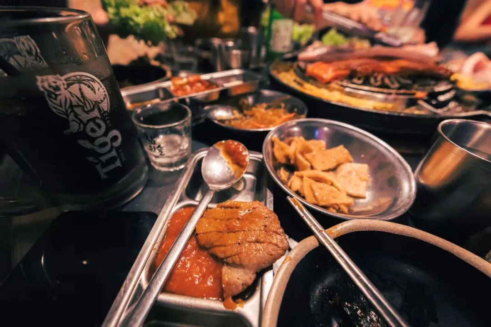
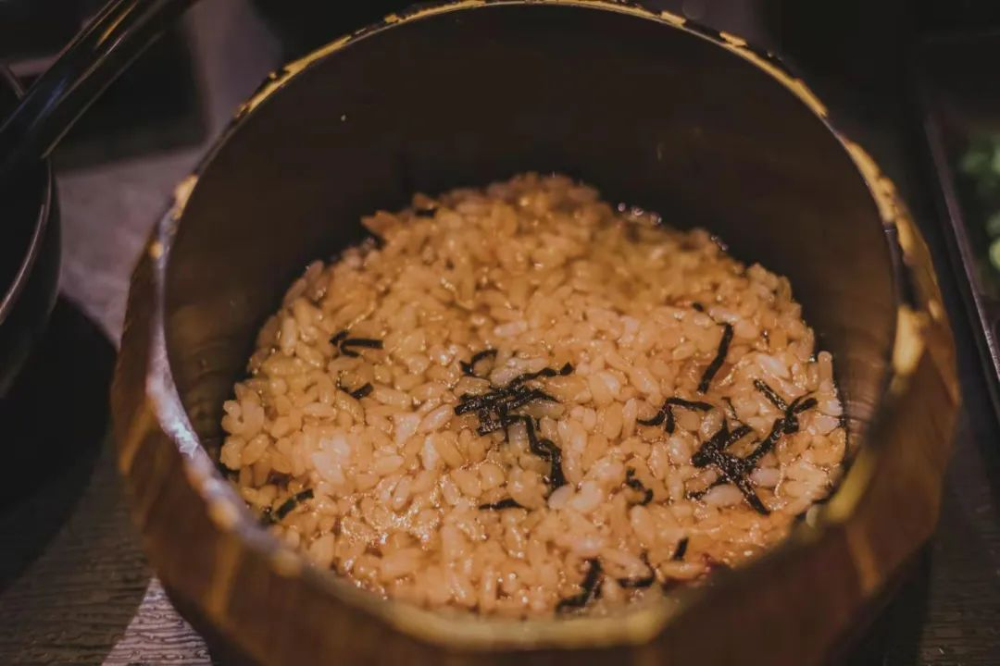
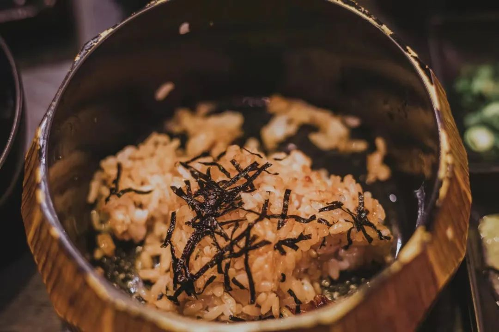

题目是一句长沙方言，约莫可以想到一张唐老鸭的图近于给你浇了一盆水然后放到太阳底下晒，晒出一些头顶上蒸出来的水蒸气那时候的感觉就叫做灭涝的。没办法给一个词语做准确定义的时候，就好比曹雪芹谈到的秋香色，如果仅仅只说丰收橙黄的话，想来没劲很多。昨天在出门办事的时候，碰到了一位能和我用流利地长沙话进行完交流的人。现实中能碰到一个人，虽然不至于说要去触碰外形，但至少声纹没有被硬件收声和网络限制而削弱声波图样。两粒酱说我回长沙会是乡音未改鬓毛衰，所以我想最近是不是能减肥个二十斤并且有决定这么去做（在我睡眠充足的时候）最近看的书是《易卜生戏剧四种》、《巴比代尔》、《戏梦巴黎》、《俄罗斯文化史：娜塔莎之舞》、《恶俗——或现代生活的种种愚蠢》看剧本明显比自己去剧场要来得无聊很多，毕竟又不是读剧本的聚会。我还蛮喜欢去参加读剧会的即便没有其他的灯光舞美来为辅烘托或者为主造作。其他几本有的已经断断续续看了好久，还有最后这本在一边看一边骂——学一学恶俗的破折号，无聊得就像是以前在看《丑陋的中国人》和《丑陋的日本人》。又到快阶段结束的时候了。这样的时候会想看一款新的相机/镜头/无人机或者什么奇怪的产品。手机可以换一个手机壳，重新贴一张膜，就能变换成好不一样。但是相机不会，相机好看的话就是好看很多由上我们有，当务之急是对各种除魅各种就是字面意义上的各种。对学术的除魅，对生活的除魅，对生活方式的除魅和对好多内容的除魅。除魅之后就可以抛开那些“亲人们，快来看看吧”、“老铁们，这赶海啊总有ta的乐子在，瞧”最近也有在看坂元裕二的新剧《大豆田永久子和她的三个前夫》上一部看他的作为编剧的作品就是历来在我的朋友圈和公众号里面封神的《四重奏》，所以这一次三个前夫的剧作有些差强人意，准确说就是配不上我对于这部剧的期望。如果语气缓和一点的话我会表述成：坂元裕二没有那么锋芒毕露了。事实上就是对此不满意。虽然这么骂有点血口喷人，但是最近特别喜欢把脑子不好的人说成是喝了核废水。看日剧的确会有习惯截图，但是这一次没有截图。不是说习惯没有了，而是因为在屏幕上看剧，总是隔得远远的。这个是有说法的。当我寝室有了一个新的好看大屏之后，我总是坐得远远的，所以截图要用蓝牙鼠标然后摆出极其违反人体功学的姿势在墙壁上截一张图。我看剧就看剧咯，干嘛做运动，也太勉强自己了一些。如果能减肥的话，或许可以考虑考虑我还在找新的增长点呢就问我写完了吗，大半辈子没这么无语过。见过在微信小窗我，或者在公众号后台私信我催更的人，第一次见到我一边写推文Ta一边监工的人。真的是乌鱼子，下次难道还得开一个写推文的直播吗？竟然和人视频到连我在写什么也要监工，时间一天超过我一周吃饭的时间，实在是离谱子。让我们随手翻开手边的一本书《娜塔莎之舞：俄罗斯文化史》，上面的名字写错了但是我不想管，我已经懒到这种程度了。他们有一种著名的做法，就是在家门口悬挂白貂或者狐狸的尸体，来躲避“魔鬼的眼睛”。伏尔加河中游彼得罗夫斯克地区的农民有一种和许多亚洲部落类似的图腾崇拜。当一个小孩出生时，他们会刻一个木娃娃，与胎盘一起放进一个棺材里，埋在自家屋底下。他们相信这能让小孩长命百岁。所有这些发现都对俄罗斯人的身份提出了一个令人困扰的问题。他们到底是欧洲人还是亚洲人？他们是沙皇的子民还是成吉思汗的后代？
这种有关生死企盼的内容，如果和身份认同挂上钩，其实有点奇怪。我指的是共享同一个传统，与对应的身份认同之间有多大的关联程度。身份认同放到舆论环境里，就成了身份政治。身份政治就可以引出种种令人无语的相互恶臭与攻讦，虽然并不是必然结果，但关联程度比之前要强上不少。同样地在看到这一段的时候，还有关于生命延长的希冀。今早看了南风窗（如果没记错的话）讲的是自闭症群体父母，对于自闭症群体的陪伴治疗，这些感人事迹在以往的报道中已经屡见不鲜。今天看到的比较新一些，而且也的确意义上升了很多，是有《民法典》可依的一个概念，叫做“意定监护”，我来尝试援引一些百科上的内容：意定监护是区别于法定监护的一种制度，是指成年人在自己清醒的时候，选择一个自己最信任的人，可以是亲属，也可以不是亲属，书面指定被委托者作为自己失能后的监护人，照顾自己的生活，处置自己的财产、权利等。所谓意定监护，就是不同于法定监护，最大限度尊重公民权利的一种法律制度。意定监护实际上是法律对公民权利实现最大化的支持。一个人希望以什么方式离开这个世界，生病了救治到什么程度，需不需要过度医疗，都可以通过意定监护的形式让其他人帮助自己实现。
我们回到选择一个自己最信任的人，我的理解是：这个人可以不是自然人，而是法人。就是作为一个单位、作为一个组织出现。这些自闭症患者在自己的监护人离世、或者监护人失能缺位时，交由给志愿福利、辅助生活部门来进行护理，我在读后即留下了这样一个概念。
我讨厌的事情之一就是被人知道了生活规律。这一点是在看一部剧的时候觉得深有同感，剧作的名字叫《人间正道是沧桑》，其中内战时期的上海特务组织头目，被下属问今天为什么不去银行存钱，然后发现了自己的生活轨迹就是这一天去存钱。其实大家都有自己的生活规律罢，每天都要到自己的房间里睡觉，吃饭也就是吃那些地方。所以我才会想着，走在路上的直线也要突然跳一下或者往旁边绕一下。放在算法调整里，这应当被称作为random / accident noise, 有可能会被别人当成是“开了天眼”可以看到一些别人看不到的内容，当然这也是没有办法的事情。要不等下下午还是去游泳吧。不行，昨天没有睡好，现在去的话就是练就了一幅健康的遗体。可恶的游泳馆，为了自己下班竟然说外面的灯坏了，要检修两个月。Literally 服气子，下次我也说我太胖了，要用两个月来瘦二十斤；两个月之后说我竟然胖了，得再休息半年。乌鱼芜湖昨天起床感觉有一股强大的后坐力，把我直妥妥地对着枕头栽下去。Welcometo graduate school~今天的范围已经从系统解剖学到了工程制图/装备制造到了数据科学的计算。好生奇怪，怎么什么东西都要学还是哈哈哈哈哈哈哈啊哈啊哈啊哈哈哈哈哈哈哈哈哈哈哈哈哈哈哈哈有意思。在哈哈群里面不管是发沙雕段子还是自己去哈哈都很好玩。大哈哈群里只能发笑料和“哈哈哈哈”，小群里可以发笑料、“哈哈哈哈”以及说自己的话。各有各的聪明，都很聪明。好喜欢评价一个事情“聪明”或者“不聪明”，这约莫是一种衔瑜的非黑即白二元世界。随缘评价一个东西，聪明或者不聪明、灵泛或者不灵泛。这篇推文纯属是吃完饭之后觉得不想睡觉但是又不想学习于是坐在这里碎碎念出来的祝大家所在建筑里的灭火器，在需要的时候都在有效期内、并且Fire Horse的水龙头里面真的有高压水而不是像我的灵感一样枯竭

